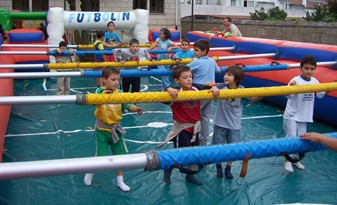

Futbolín
 De: La Frikipedia, la enciclopedia extremadamente seria.
De: La Frikipedia, la enciclopedia extremadamente seria.
Obra cumbre de la creación española, que consta, cómo no, de algo pegado a un palo, como el chupachús, el mocho de fregar, la escobilla del wáter o el garrote vil. Su función principal, es la de simular un partido de furbo, pero a diferencia de los vidriojuegos, esta simulación se lleva a cabo de forma analógica, donde equis, cuadrado, círculo y triángulo son sustituídos por un sutil giro de muñeca.
 Un ejemplo del terreno de juego
Composición
La composición consta de:
- 22 muñequicos divididos en dos equipos de once. La táctica suele ser la 3-3-4. Los colores de la vestimenta dependen del hábitat del dueño, que suelen ser del equipo local contra el eterno rival.
- 8 palos con mango. Es donde van pegados los muñequicos. Van cuatro a cada lado: uno para el portero, uno para la defensa, uno para la media y uno para la delantera.
- Bolas. Van en un número sin determinar, casi siempre impares.
Vestimentas según ubicación (a rellenar por los frikipedistas)
Reglas básicas
Como en cualquier partido de furbo, 22 tíos medio en pelotas (vamos, lo que se dice con un calzón de mierda y una camiseta) se baten en un duelo fraticida por el honor, el orgullo, la gloria y en menor medida, por el dinero. El principal objetivo es meter la bola en la portería del otro, pero atendiendo a unas normas que pueden variar según la zona en la que se decida jugar.
- El saque inicial: debe realizarlo el que esté en la zona donde han salido las bolas. Debe hacerse de la siguiente forma: coger la bola, lanzar hacia el extremo lateral del campo, esperar a que rebote en el lateral del lanzador, ver cómo la bola no llega al extremo lateral del lanzador, coger la bola del centro del campo de juego, repetir el proceso con más fuerza hasta que rebote en el lateral.
- El gol: Da igual la posición del jugador, ya que como en cualquier otro simulador, la leyes físicas nos importan un carajo, intentaremos marcar gol en la porteria del otro jugador con lo primero que podamos. Para tal objetivo, giraremos con fuerza la muñeca hacia la posición del portero rival. Importante: Debe ser del rival, ya que en ocasiones, bien por mala suerte, bien por ser unos zafios, es posible que la bola acabe dentro de nuestra portería.
Reglas avanzadas
Para cualquiera que practique un juego, con el tiempo, las reglas básicas se hacen cortas, y se inventan nuevas fórmulas para hacer más apasionante el juego. Cabe destacar, que estas reglas varía dependiendo de la zona.
- Jugada: Los goles marcados de la siguiente forma, no subirán a nuestro marcador, sino al del equipo que reciba el gol. En este juego de estrategia, en el que hay un equipo, no se puede hacer partícipes a los compañeros de equipo, teniendo que marcar el gol de forma individual. Esta regla varía según zonas, en según que partes, la jugada se prohibe solamente con los jugadores más adelantados. Para que el gol recibido suba a nuestro marcador, tenemos que levantar los jugadores de la defensa y al portero, si no, no se lleva a cabo la operación completa. Importante: Aún a pesar de ser lo bastante rápidos como para poder ver todo el proceso, si levantamos los jugadores y la bola toca un poste, el gol será legal.
- Gol del portero: Máximo galardón del futbolín. Es lo más grande que le puede pasar a un jugador, marcar un gol con el portero, sin que toque ningún jugador, lateral o poste por el camino vale doble. Tras la realización del gol del portero, el que hubiere realizado tal gol tiene el permiso para jocarse y ridiculizar al que lo hubiere recibido. Es inherente en el receptor de tal vergüenza, el intentar devolver acto seguido semejante deshonra, si bien es cierto, que no se conocen muchos casos de haberlo logrado. Ahora bien, como lo clave el descojone cambia de lado... y es muy humillante.
- Sacar la bola de la portería: Acción poco recomendable para los menos hábiles. Consiste en, tras recibir un gol, abalanzarse a toda velocidad hacia nuestra portería, con el objetivo de encontrar la bola a ciegas antes de que ésta caiga por el recorrido interno hacia el cajón. Los riesgos será asumidos por el jugador que se sitúe a la izquierda, ya que no se puede responsabilizar al dueño del bar/agüelo de los cambios de los recreativos, de las posibles lesiones que esta acción puede conllevar. El hecho de ir a por la bola, puede encontrase con golpes varios, bien por los palos en los que están pegados los jugadores, los bordes del campo de batalla, o lo que pueda haber dentro de la portería (insistimos: dentro de la portería, iremos a ciegas).
- Es que estabas ahí...: Tal vez sea la mejor y más lograda simulación del juego de fúrbol. Si en un momento dado, la bola se detiene en el terreno de juego, tenemos la opción de soplar dicha bola hacia un jugador de nuestro equipo. Es aquí donde esta regla se puede llevar a buen puerto. El jugador rival tiene
el derecho la obligación de hacer el hooligan, pudiendo golpear con saña nuestra cabeza.
- Por debajo de la mesa...: Pues eso, si un jugador (o equipo) le gana a su rival dejándole el marcador a cero, el perdedor deberá pasar por debajo de la mesa del futbolín.
Tipos de jugador
La fauna de este tipo de matarratos, es tan rica y variada como la escala de grises. Iremos de menos a más en cuestión de su experiencia.
- Inexperto: No tiene ni pajolera idea del juego, pero el futbolín estaba ahí... Echa su euro como cualquier otro que deposita su moneda, salen las bolas, y se da cuenta de que se necesita a otro jugador para poder hacer algo.
- Iniciado: Más o menos como el anterior, pero sabe que necesita un amigo para poder pasar los próximos 10 minutos sin quedar como un imbécil.
- Enterao: Ya ha jugado varias partiditas, sabe sacar y no hacer jugada, pero tiene menos olfato de gol que la madre que lo parió. No sabe poner los jugadores para defender, y en ocasiones es quien obstruye un gol claro de su compañero, que tiraba desde atrás. Siempre preferirá ponerse delante. Será el elegido por el jugador nivel Pro o All-Star para hacerse el rey de la pista sin dejar de mirar la televisión del bar o para echarse un entrenamiento por la patilla (paga el enterao con la ilusión de ganar y que se cumpla la regla del "quien entra paga").
- Experimentado: Levanta los jugadores si tira su compañero, pero se le olvida bajarlos cuando el rival devuelve el tiro. Marcará el 10% de los goles a lo sumo, pero se lo pasará pirata cuando lo haga.
- Pro: Nivel máximo al que opta un estudiante de instituto. Se sabe las posiciones de defensa, marca goles, se sabe todas las reglas de fuera de su zona y con una moneda se pega toda la tarde jugando. Si alguien propone jugar al futbolín, su nombre será mencionado tras la expresión: "Yo con..."
- All-Star: Nivel supremo del futbolín. Se las sabe todas, propone reglas nuevas, da por hecho que todo el mundo sabe jugar y ha metido tantos goles en su vida, que ni parpadea cuando los mete.
Tipos de Oponentes
Hay diferntes tipos de oponentes en este gran pasatiempo (que deberia de ser deporte oficial) con los que se puede jugar, así como tambien a los que hay que evitar, esta es una lista de tipos de adversarios según los niveles y tipos de jugador, estos son:
- Pagafantas: Los pagafantas lo juegan en los bares y cafetines (es solo una posibilidad), en lo que buscan a alguna femina para tener en la mira de pagarle el trago o café, en el caso de los cafetines. Son alrededor de los niveles de enterao, experimentado y pro.
- Jebis: Así como los pagafantas les frecuentan en bares, los jebis lo juegan debido a que seguramente la barra estará llena de otros jebis y posiblemente punks (aunque solo por el kalimotxo), debido a que a veces las mesas de bar llevan algunos jugadores mochos, aprenden con mayor nivel de ficultad, poniendoles a nivel "Pro".
- Punks: No es común verles en esto, aunque se han visto partidillas entre ellos (a menos que sea por los motivos de su constante rivalidad con los jebis), pero han sido pocas las veces que se han visto en este hermoso pasatiempo (las veces que se han visto esos sucesos fueron a nivel local y en otras naciones, mas no se sabe lo suficiente, debido a la falta de evidencia y a que Ratzinger Z le hizo trampa en una partida a Alucard en aquel momento).
- Canis: Como se mencionó antes, los canis son peligrosos en este juego, asi que evitad retarles, so os retan, mas os vale ser nivel "All-Star" en el enésimo "dan" o provenir del Valhala, por que la afrenta de un Cani es inevitable y son "Pros" y "All-Stars".
- Vin Diesel: Debido a su devastador poder en las artes de la guerra contra los wombats (cuenta el hecho de que apunte a un wombat a 20 km. y no a la porteria, cosa que el hace a posta para luego bromear un poco, recuperar la pelotilla y continuar la partida), el ha aprendido a vencer en todas sus formas, incluso a canis en este deporte ibero, es "All-Star" de enésimo dan.
- Chuck Norris: Así como Vin Diesel es enésimo dan, Chuck Norris le iguala en destreza y habilidad (otro enésimo dan), eso mientras lanza patadas giratorias a alguna panda de villanos y vence a los canis en otra mesa, en lo que Vin Diesel hace lo mismo (pero con la variante de usar su calva nuclear y no una patada giratoria), solo para terminar en empate con este.
- Residentes del Valhalla: En vista del auge y abundancia de los bares en el Valhala, los futbolines son considerados el deporte nacional por absolutamente todos los residentes, según el camarada Mick; de hecho, el numero de futbolines es directamente proporcional a al numero de bares, pero debido a las normas imperativo-atributivas del Valhala respecto a las normas y códigos reglamentarios del futbolín, los jebis, punks y otros rockers cuidan, reparan, restauran e incluso construyen mesas (eso es amor al deporte), aparte de darle carrilla extrema al juego a nivel "Pro" y "All-Star", poniendoles a la par contra los canis.
- Frikis: Notese que entre sus huestes que se dividen en inimaginables variedades, hay quienes seguramente lo juegan en todos los niveles, debido al variado frikismo que existe entre ellos.
- Pijos o Fresas (bueno, aquí y en China son la misma puta mierda): Estos maricones, arrogantes y engreidos seguramente tienen una mesa domestica hiperlujosa en sus casas, por lo que o estan en nivel inferior a enterao debido a su puta hueva, o superan el enterao, pero limitados a pro.
- Estudiantes de Instituto: los tipicos chavales que puedes encontrar en un bar o recreativo, tratando de pasar el rato despues de un arduo dia de andar rompiendose el cerebro con formulas, ecuaciones, literatura, mas formulas, procedimientos, investigaciones, mas formulas, reportes, ensayos y mas formulas. Son, por lo general, todo excepto "All-Star".
Hábitat
¿Dónde encontrar un futbolín? La respuesta es muy simple. Los principales puntos son los recreativos y los bares. En principio, no resultará difícil encontrar uno, el problema es que esté libre.
En recreativos podremos encontrar más de uno, habiendo dos o incluso tres. El inconveniente, es que suele estar ocupado por canis, auténticos astros de este deporte, se recomienda si vas a despejar mesas de canis, tener amigos jebis (true jebis, de preferencia, si es que te quieren prestar ayuda) o punks (siendo esta opción, traete unos red skins). Es económicamente el más rentable, ya que por un euro, podremos tener acceso a ¡dos partidas! Doble diversión al mismo precio. Importante: No aceptar un reto por parte de un cani. ¡Bajo ningún concepto!
En bares, hay que diferenciar bien los tipos de bar (los canis no se atreven a ir a la primer señal de jebis o punks):
- La típica tasca nos ofrecerá un futbolín desnivelado y sucio, en el que los mangos de los palos ofrecerán un agarre estupendo, y la fricción del movimiento de los jugadores puede causar agujetas en los antebrazos a jugadores poco experimentados.
- Sin embargo, en un bar de copas (o club) encontraremos la versión ampliada de este futbolín. El nivel de suciedad y desnivel es superior, y si le añadimos que suelen jugar personajes borrachos, es normal que el terreno esté lleno de kalimotxo o cerveza, lo que ofrece una dificultad añadida a la fricción, ya que la bola recorrerá un terreno de forma totalmente aleatoria, dándose el caso de detenerse en ocasiones.
- En el caso de un bareto jebi, la mesa obviamente se encuentra jodida por el uso excesivo hasta en plena cogorza, cumpliendo las caracteristicas de la tasca, adicionando el hecho de que las barras estan oxidadas a lo bestia y mal lubricadas con saliva, conllevando a mayor oxidación
Cabe destacar, que el número de bolas en estos casos, puede ser realmente sorprendente, tras introducir nuestro euro, tal vez salgan solamente tres bolas, pero además se dará el caso de que no sean iguales ni en color, ni mucho menos en tamaño, y por supuesto se da, que estarán totalmente picadas. Podría darse el caso de que alguno de los jugadores no tenga alguna de las piernas, o incluso que no hubiera jugador. Importante: Si el jugador que falta fuera el portero, se recomienda encarecidamente no jugar. Más importante aún: Procuraremos no ejecutar la regla avanzada de Sacar la bola de la portería, en especial si vemos un vaso roto en el mismo futbolín, ya que no se puede asegurar, ni la integridad física del jugador, ni que el mísmo pueda después sacar el brazo.
Estrategias
- El molinillo o ruleta: Técnica milenaria creada por algún vicioso. Consiste en dar vueltas a toda leche el mango, consiguiendo así que los jugadores de ese palo lancen con fuerza la bola hacia delante. En la práctica, el resultado es demasiado aleatorio como para fiarse mucho de la técnica, pero más vale lanzar con fuerza que sin ella. A partir del nivel Pro esta acción es ilegal y se castiga con insultos y gritos.
- La cortina o serrucho: Se atribuye a un tipo pasado de coca, posiblemente el mismo que creó el molinillo. Su función es de carácter defensivo, consiste en mover el palo lleno de muñecos de un lado a otro a toda pastilla. El objetivo está claro, no permitir que la bola pase entre nuestros jugadores. Esta técnica es totalmente inútil si se realiza con el portero. Existe una creencia popular no demostrada, de que en realidad lo que se intenta con esto, es golpear la entrepierna del jugador que está en frente. Tambien ilegal y con su respectivo castigo a partir del nivel Pro, si se acierta con la entrepierna del adversario, en cualquier nivel, la bola acabara contactando con tu cara.
- Voleibol: Perrería desarrolada a mediados de los 60. Consiste en tomar el pelo al jugador que se encuetra más cercano al cajón de las bolas. Se debe pedir al susodicho que nos pase la bola, mientras nosotros mantenemos las manos en una posición media, a la altura de la cabeza. Cuando el pardillo en cuestión lance la bola, golpear con fuerza, en dirección a la porteria rival, consiguiendo un tanto a nuestro favor.
- Sacar a lo tenis: Esta táctica es muy compleja, si bien se ha intentado hacer desde que se inventó el futbolín, jamás se ha conseguido realizar. Consiste en poner el portero patas pa'rriba, situar la bola en sus tacones e intentar marcar gol directamente. En la práctica, lo único que se ha conseguido hasta ahora, es perder una bola del futbolín. Una variante es la catapulta, saque con la cabeza del portero situado en posición horizontal (servidor asegura que se meten goles con esta táctica). Para aprender la catapulta primero se debe pasar por una simple introducción de uno de los amigos que te indica que debes girar el mango en dirección opuesta a la porteria del contrincante para que salga todo bien... saliendo una bonita parabola de la bola hacia la cabeza de algún bebedor de cerveza situado en la barra.
- Inclinar la balanza: Se requiere fuerza física para realizarla. Consiste en agarrar consistentemente de los mangos y estirar hacia arriba. El efecto deseado es que la bola se sitúe en el lateral opuesto al nuestro cuando la bola se ha detenido (siempre y cuando ya conozcamos los efectos de es que estabas ahí...). Inutilidad donde las haya, ya que la bola tenderá a ir después al jugador contrario y encima nos echara la bronca el agüelete de los cambios de los recreativos.
Consejos prácticos
El aspecto de una persona, jamás dirá cómo es como jugador de futbolín. Así pues, es mejor desconfiar de todo aquel que diga cosas parecidas a -"¿Nos jugamos unas cervezas al futbolín?", e invitarle directamente.
Jugar al futbolín de tu sobrino, de plástico malo y bolas de papel, con tu sobrino de 6 años, no otorga ninguna experiencia ni capacidad para jugar al futbolín. Este futbolín, pesa menos de una décima parte de los que pesa uno de verdad, no está a la altura indicada (se ha demostrado que jugar mucho en este tipo de futbolines hace que salga chepa), los jugadores no estan distribuídos como en uno normal, y además, el enano de enfrente a la segunda bola ya está usando los dedos para jugar al furbo.
En los futbolines que pone: 2 Partidas, NO pulsar dos veces para ver si salen el doble de bolas y ahorrase así el cansancio de darle después de jugar una partida completa.
La práctica de jugar en futbolines no es considerada como un deporte oficial.
Jugar en videoconsolas no da experiencia.
Ver partidos por la tele, no nos da tampoco experiencia.
Autor(es):
- Ak665
- Carlos Salavert
- Alex2610
- Roms
- Viento
- Crizaga
- Patadaenelcraneo
- Cesarnirvanero
- Acmkti
- Cibercrank
Frikipedia 2005-2016, Licencia
GFDL 1.2 - Extraído por FrikiLeaks